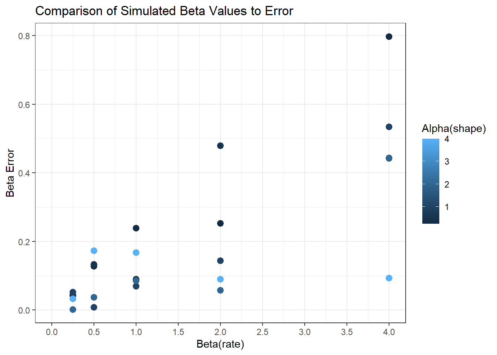

── Attaching core tidyverse packages ──────────────────────── tidyverse 2.0.0 ──
✔ dplyr 1.1.4 ✔ readr 2.1.5
✔ forcats 1.0.0 ✔ stringr 1.5.1
✔ ggplot2 3.5.2 ✔ tibble 3.2.1
✔ lubridate 1.9.4 ✔ tidyr 1.3.1
✔ purrr 1.0.4
── Conflicts ────────────────────────────────────────── tidyverse_conflicts() ──
✖ dplyr::filter() masks stats::filter()
✖ dplyr::lag() masks stats::lag()
ℹ Use the conflicted package (<http://conflicted.r-lib.org/>) to force all conflicts to become errors
library(ggplot2)library(MASS)
Attaching package: 'MASS'
The following object is masked from 'package:dplyr':
select
library(purrr)
Warming Up
Most statistical software packages have several built-in distributions to handle the most common situations statisticians come across when simulating values.
Remember to set your seeds for these exercises so that you get the same answer each time the code is evaluated.
Exponential Distribution
Simulate 1000 draws from the exponential distribution \[f(x) = \lambda e^{-\lambda x},\;\;\;\; x\geq0, \text{ with } \lambda=3\]
How might you use your 1000 draws to estimate the probability that \(x > 1\)? Provide an estimate using only your 1000 draws, and compare this estimate to one derived from pexp (R) or scipy.stats.expon.cdf (Python).
pexp(1, rate =1/3, lower.tail =FALSE)
[1] 0.7165313
sum(exp_3_sim >1) /1000
[1] 0.689
What is the average error from using a \(n=1000\) simulation instead of a numerical calculation for the probability that \(x>1\)? Write a function to calculate the error from one simulation, and evaluate that function 100 times to calculate the expected error from using a simulation estimate rather than deterministic numerical integration.
## Gamma Distribution
The Gamma distribution is an exponential family, so it has MLEs that are unbiased and efficient estimators, if somewhat challenging to calculate in closed form.
Luckily, there are functions in R and python to handle this:
- `fitdistr(...)` in the `MASS` package (R) will estimate the parameters for a gamma distribution from sample data.
- `scipy.stats` distribution functions have a `.fit(data)` method that will estimate distributional parameters
In this problem, you will work with the gamma distribution with parameters $\alpha, \beta$ (note that R uses a different parameterization than Python) and PDF
$$f(x | \alpha, \beta) = \frac{\beta^\alpha x^{\alpha-1} e^{-x}}{\Gamma(\alpha)}.$$
1. Write a function that will calculate the MLE $\hat\alpha,\hat\beta$ from a vector $x_{samp}$ of gamma-distributed samples. Your function should have required parameter $x$ and optional parameters $\alpha,\beta$ representing the true values. The function should return a list of $\hat\alpha, \hat\beta$ and, if $\alpha,\beta$ are provided, it should also return $\alpha_{err} = \alpha-\hat\alpha$ and $\beta_{err} = \beta-\hat\beta$.
::: {.cell}
```{.r .cell-code}
gamma_est <- function(n = 1000, shape = 1, rate = 1){
gamma_sim <- rgamma(n = n, shape = shape, rate = rate)
fit_gamma <- fitdistr(gamma_sim, densfun = "gamma",
start = list(shape = 0.00001, rate = 0.00001), lower = 0.0000001)
est_a <- fit_gamma$estimate['shape'][[1]]
est_b <- fit_gamma$estimate['rate'][[1]]
results <- list(
# alpha = shape,
# beta = rate,
alpha_hat = est_a,
beta_hat = est_b,
alpha_err = abs(shape - est_a),
beta_err = abs(rate - est_b)
)
return(results)
}
gamma_est()
For a grid of \(\alpha \times \beta=\{0.25, 0.50, 1.00, 2.00, 4.00\}\times\{0.25, 0.50, 1.00, 2.00, 4.00\}\), sample 100 values from the \(\text{gamma}(\alpha,\beta)\) distribution. Provide the true parameter values and plot your error values in an appropriate plot. Take care to choose your plot mappings to support your discussion of the following: What trends (if any) do you notice in the estimation error?
ggplot(data = sim_results1) +geom_point(aes(x = beta, y = beta_err, color = alpha), size =2.75) +scale_x_continuous(limits =c(0,4), breaks =seq(0,4,0.5)) +labs(x ="Beta(rate)",y ="Beta Error",color ="Alpha(shape)",title ="Comparison of Simulated Beta Values to Error" ) +theme_bw()

From the above plots you notice that error appears to increase for each respective parameter as they increase. It also appears that if one parameter is larger than the other, there is greater error in the simulated estimates. If the parameter values are the same, the simulated values are closer to the actual.
Now, let’s vary the sample size. For \(n=\{20, 30, 50, 100\}\), use your function to evaluate the error for \(\alpha=1, \beta=2\). How does the error change as \(n\) increases? Provide an appropriate plot as well as a description of the changes for increasing \(n\).
I decided to change the values a little because I was curious.
From the plot we can see that the error in our estimates exponentially decreases as sample size increases. We also notice minimal improvement in error after a sample size of 250.